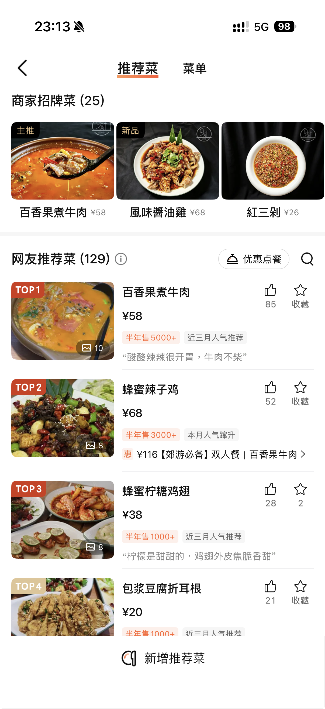
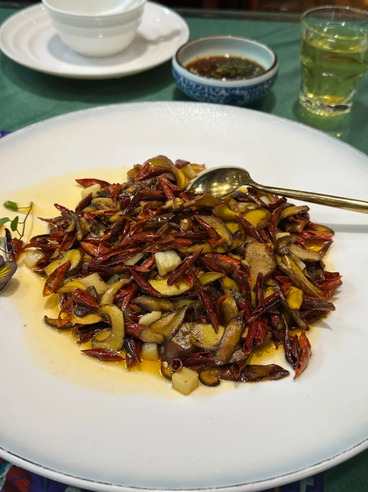
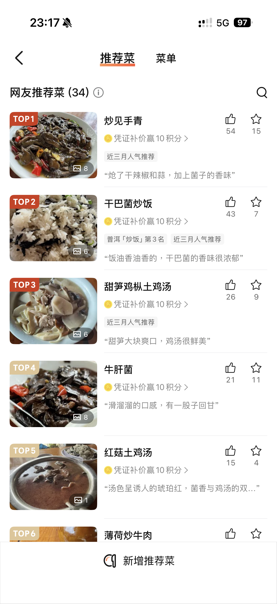
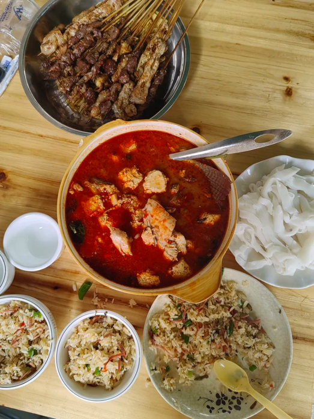
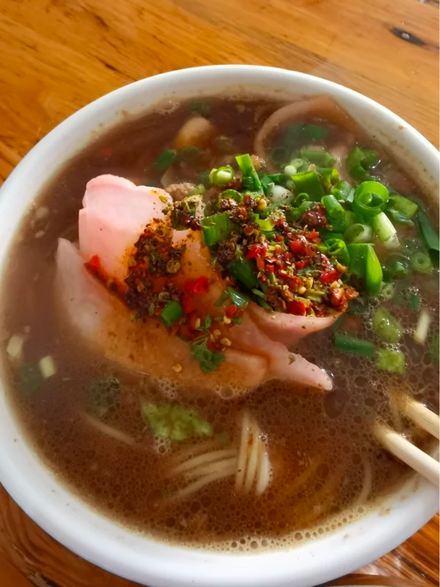
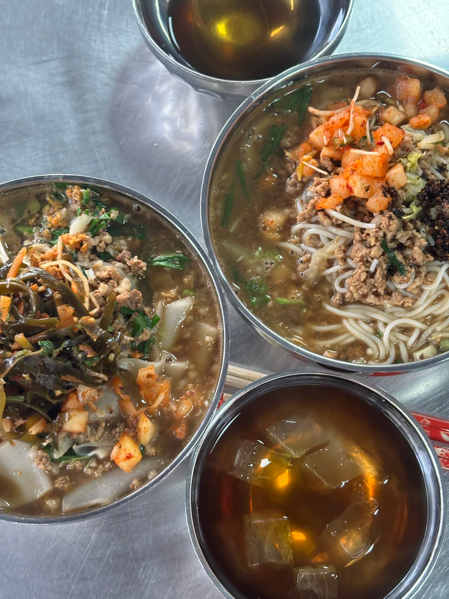
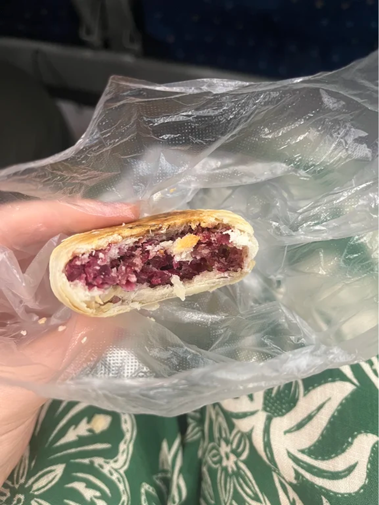

11:00–21:00人均 ¥59

特色與好評環境乾淨清爽的「漂亮飯」，適合拍照。百香果牛肉酸甜開胃，蜂蜜辣子雞很下飯，油嗆雙拼也是招牌。擺盤好看，蜂蜜辣子雞味道驚艷，百香果牛肉風味獨特。
差評 / 避坑有顧客覺得服務較敷衍，需要主動要水；上菜慢，有時菜品售罄。整體口味中規中矩、價格相對偏高，若主要為吃飯而來，可能覺得性價比一般。
從野生菌農家菜、深夜粉麵到現烤糕點，按類別挑選。點擊店名開啟高德地圖，照片可點開查看原圖。
4 家餐館 · 野生菌、農家菜與地方風味

特色與好評環境乾淨清爽的「漂亮飯」，適合拍照。百香果牛肉酸甜開胃，蜂蜜辣子雞很下飯，油嗆雙拼也是招牌。擺盤好看，蜂蜜辣子雞味道驚艷，百香果牛肉風味獨特。
差評 / 避坑有顧客覺得服務較敷衍，需要主動要水；上菜慢，有時菜品售罄。整體口味中規中矩、價格相對偏高，若主要為吃飯而來，可能覺得性價比一般。

特色與好評本地人常去的農家館子，主打各種野生菌。炒見手青口感絲滑、菌香濃郁；爆炒心管脆嫩香辣；油炸蜂蛹越嚼越香；雞樅筍子湯鮮美。食材新鮮、鍋氣足，適合體驗地道農家菜。
差評 / 避坑環境一般、裝修簡陋；飯點人多，上菜較慢。部分顧客覺得見手青偏油膩，價格不算便宜。位置較偏，建議自駕或提前約車。

特色與好評本地人常去的菌子館，主打山野鮮味。必點炒見手青（大火爆香、脆爽菌香）和甜筍雞樅湯（清甜鮮美）。食材新鮮，見手青約80元一份；店員親切，等菜時可自取芭蕉、李子墊肚子。
避坑提醒等菜很慢，口味偏鹹；雞樅菌評價一般，有顧客覺得像平菇、性價比不高，建議斟酌點選。位置偏且難停車。

特色與好評李誕推薦過的小店，門面不大但人氣旺。臭豆腐煮魚是普洱特色，豆腐嫩、味道濃；嗆雞腳筋脆爽分量足；炒米線味道好但偏鹹。價格實惠，人均約50元，環境比網上評價好。
差評 / 避坑臭豆腐氣味濃，不習慣類似豆汁風味的請慎點。菜品整體偏鹹偏辣，不能吃辣要特別說明微辣；店在小巷裡不太好找，烤串評價一般。
2 家米線店 · 早餐、夜宵都能安排

特色與好評開了二十多年的深夜寶藏老店，專做夜宵。湯底濃郁，泡蘿蔔片脆嫩酸香，是米線的靈魂；油辣椒後勁足，花椒麻味濃。本地人喜愛，適合高鐵到站後去吃一碗。
差評 / 避坑營業到凌晨，飯點人多要排隊；辣椒很辣，不吃辣請留意；環境簡單，就是普通小店。

特色與好評藏在小巷裡的熱門店，紅色招牌醒目。特色是自製酸醋，可從大缸裡舀醋，加冰喝很爽；米線有韌勁，可加辣椒和花椒油。酸醋加冰很搭，米線Q彈、分量足，常有人專程排隊來吃。
差評 / 避坑人很多，最好有人排隊、有人佔座；辣椒很辣，醋也偏酸，不愛酸可能喝不慣。有人覺得米線偏鹹，可請老闆多煮一會、口感軟一些。
1 家糕點店 · 適合買伴手禮

特色與好評戴家巷和五一步行街都有店，主打現烤糕點。雲腿酥層層掉渣、鹹香不膩；鮮花餅玫瑰香濃、甜度柔和；三仁酥香酥甜。新鮮出爐特別香，適合買伴手禮。
差評 / 避坑去早了可能有些品種還沒賣；鮮花餅評價中等偏上，吃多會覺得甜。單個約7元，價格不算特別便宜。
想逛夜市小吃，可到五一農貿夜市附近邊逛邊吃。